Featured guide
How to report a fake Google review
Find out what may break policy, what evidence to save and what to do after you report it.
ReviewsBoost Learning Centre
Practical advice on reporting harmful reviews, responding to customers and understanding Google’s rules.
Featured guide
Find out what may break policy, what evidence to save and what to do after you report it.
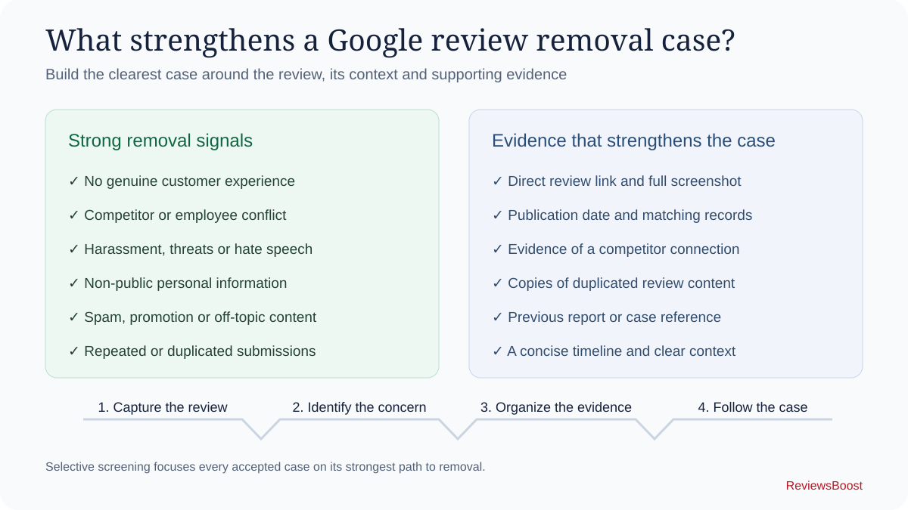
Check whether a review may violate Google’s policy, organize evidence and see what happens after reporting.
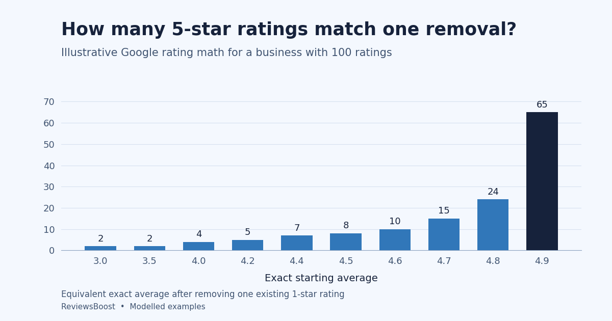
Find out what evidence can support a report and how removing one rating could affect your score.
Compare free reporting with professional help and calculate fees for different outcomes.
Understand genuine experiences, incentives, rating manipulation and conflicts of interest.
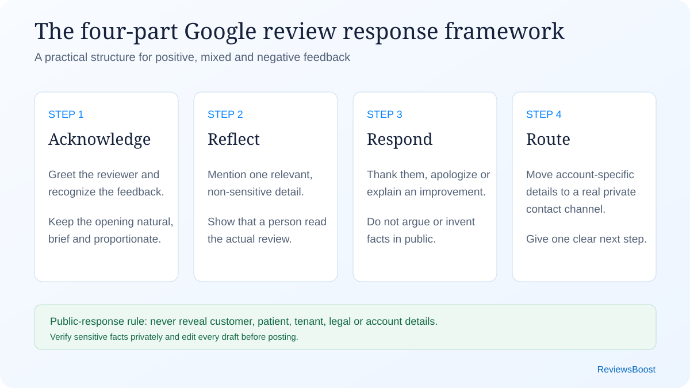
Use practical examples to reply to positive, negative or inaccurate feedback.
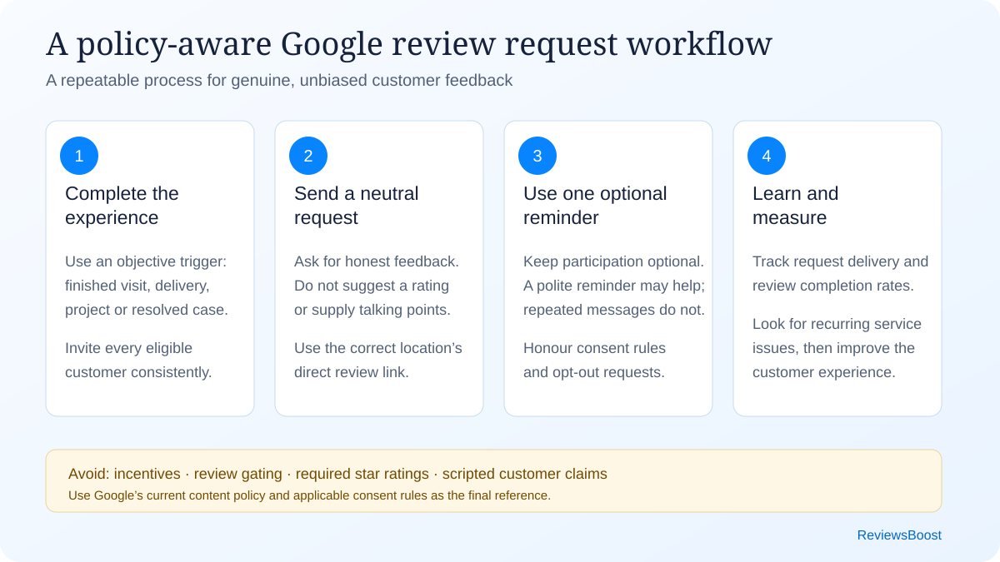
Use email, SMS and in-person wording to invite honest feedback from customers.
Find your official review link, turn it into a QR code and test it before sharing.
Work through delayed reviews, missing posts, stale counts and profile changes.
Check which Google reporting route fits the current status. Copy or download an outline for an eligible appeal.
Start with a review link and check the wording or your concern against common policy issues.
Estimate how many new five-star reviews could bring your displayed rating to a target.
Find short answers about review timing, links, replies, removals, privacy and local visibility.
New research · November 5, 2026
189 original coverage calculations explain why a Google review widget can miss the record you need.
Google documents a five-record limit for one Places response. Explore the coverage gap, a hypothetical sampling benchmark and what repeated refreshes can actually establish.
Read the study and download the data →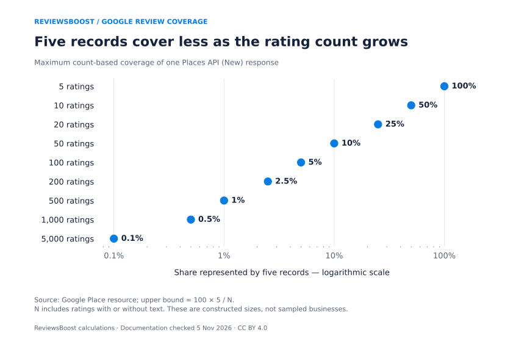
Earlier research: staff names and request policy · language and moderation accuracy · reply timing and time-order bias.
We audited 22,801 broader Canada-coded extortion records. Explore three new figures, 31 aggregate data rows and a practical review-and-demand evidence worksheet.
Read the research and download the data →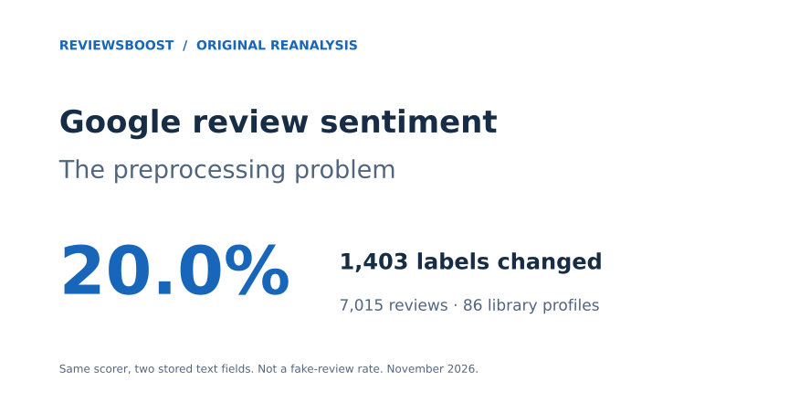
A reanalysis of 7,015 public review records shows how the choice of text field changed the results.
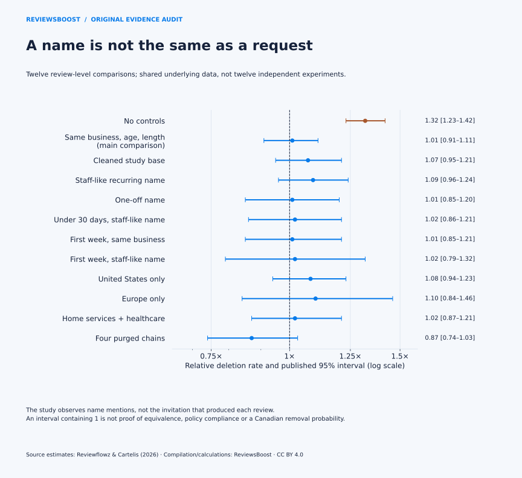
See what Google’s rules say about asking customers to mention employees in feedback.
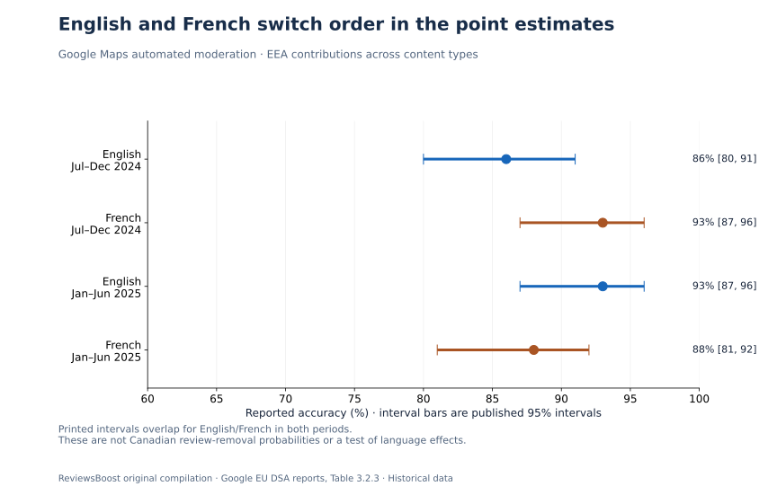
Compare how research benchmarks perform across languages, including English and French.
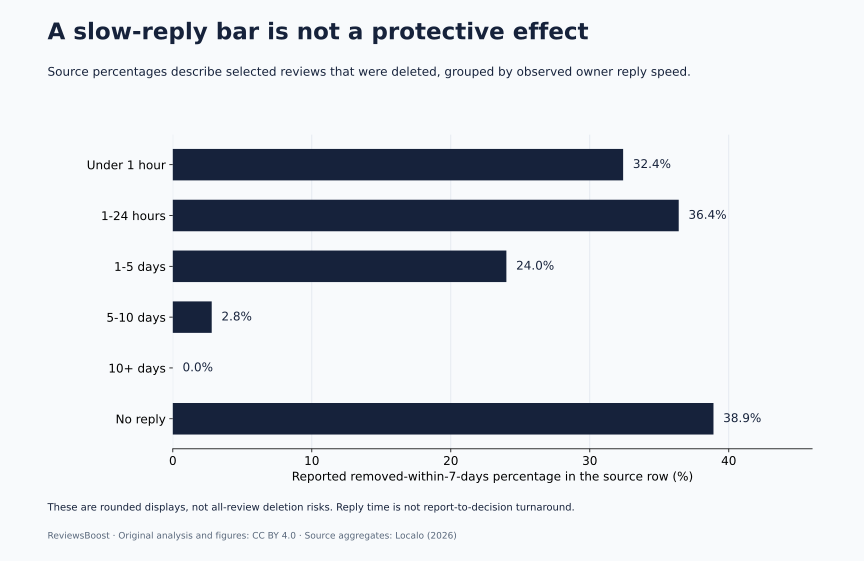
See how the order of replies and removals can influence what a study appears to find.
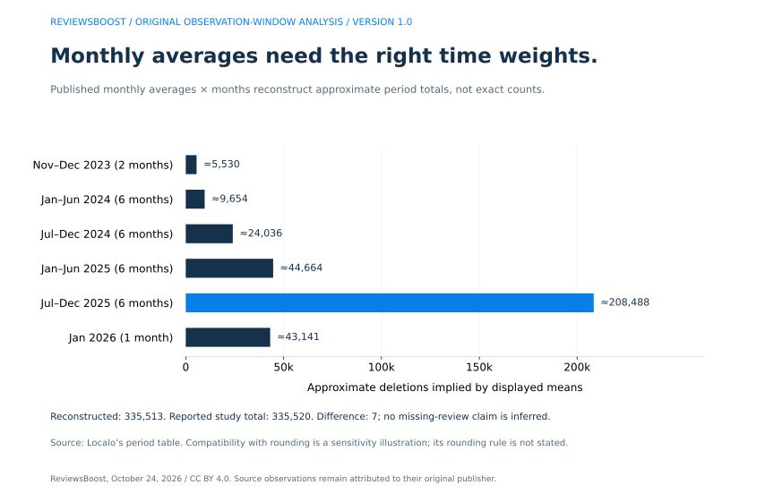
Explore Google Maps legal-notice data and the limits of using it to estimate individual case times.
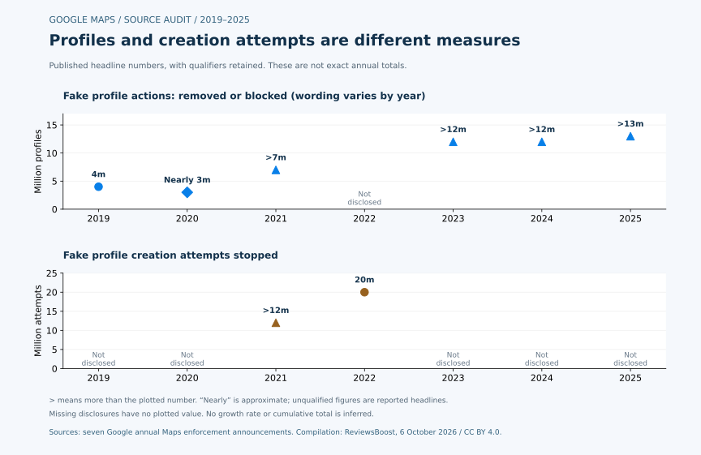
Compare removals, blocked creations and unauthorized ownership attempts over seven years.
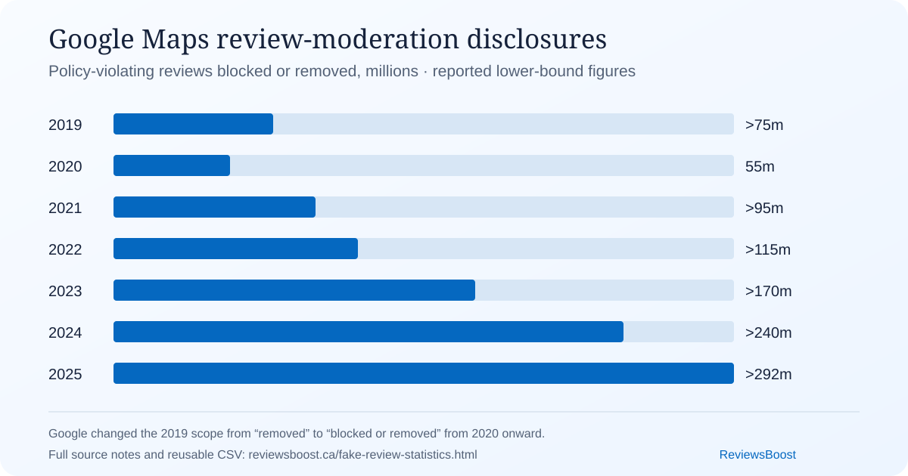
Explore Google Maps moderation disclosures with source links and downloadable data.
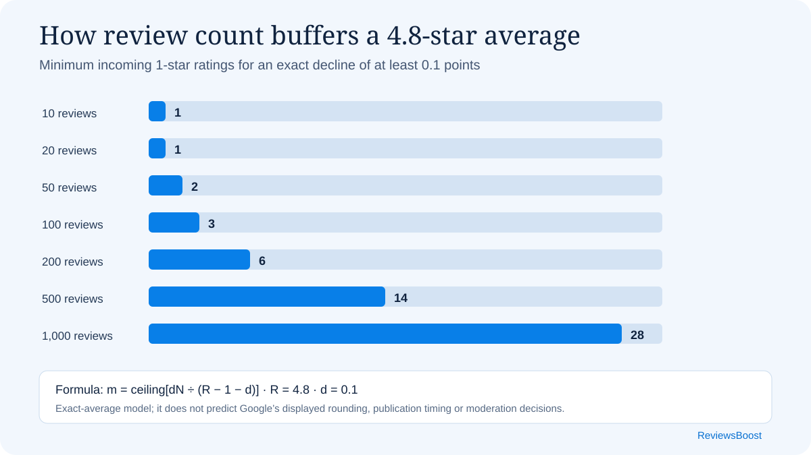
Explore 420 scenarios that show how one-star reviews can change an exact average.
Ask our team to assess your Google review and explain the next step.